LuceLight
Ambient — Arsenale di Venezia 2010
Installazione — Ambient art&architecture, Arsenale Tesa 90 alle Nappe, Venezia, 27 agosto – 26 settembre 2010
Installazione — Ambient art&architecture, Arsenale Tesa 90 alle Nappe, Venezia, 27 agosto – 26 settembre 2010
Le opere luminose installate tra i mattoni secolari dell'Arsenale di Venezia: lightbox e colonne stenopeiche accese nel buio della Tesa 90.
The light works installed among the centuries-old bricks of the Venice Arsenale: lightboxes and pinhole columns glowing in the dark of Tesa 90.
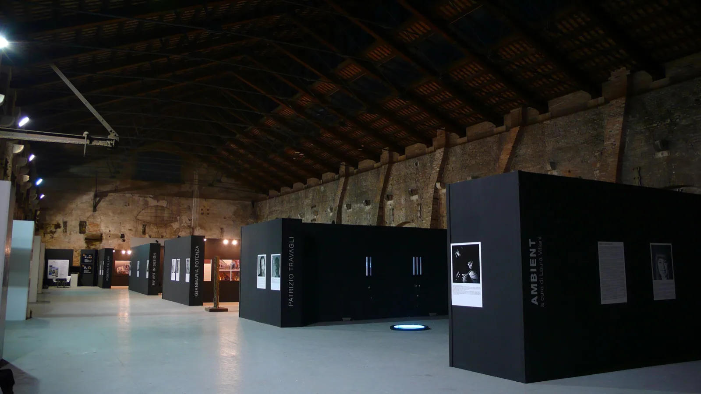
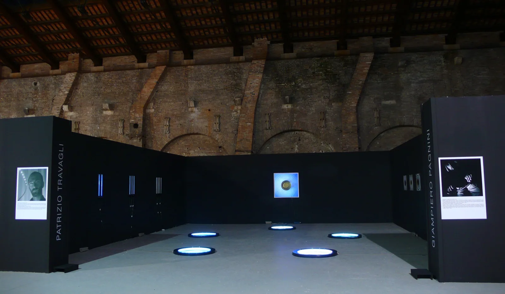
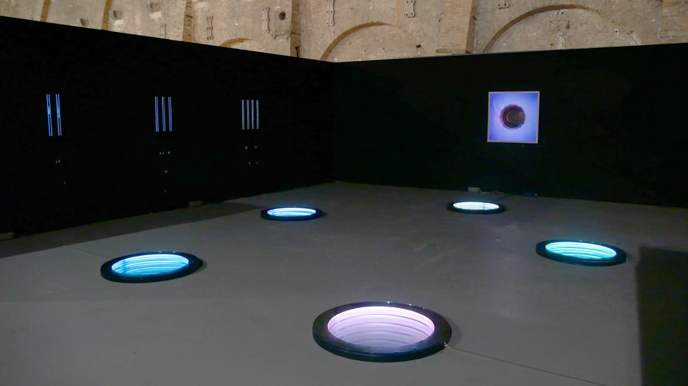
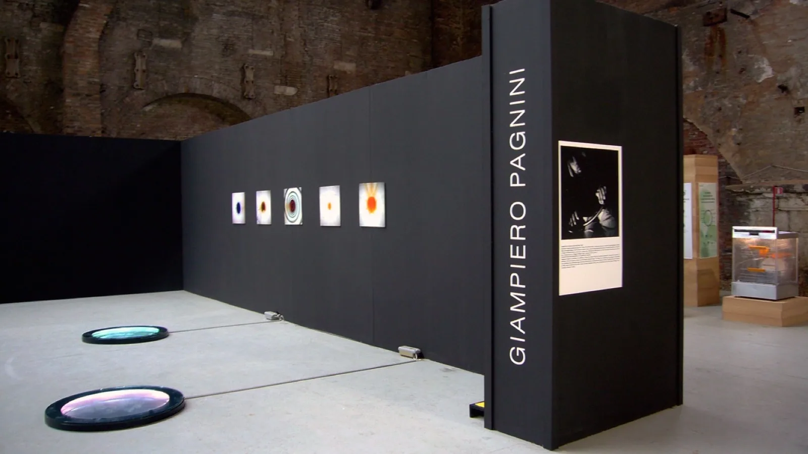
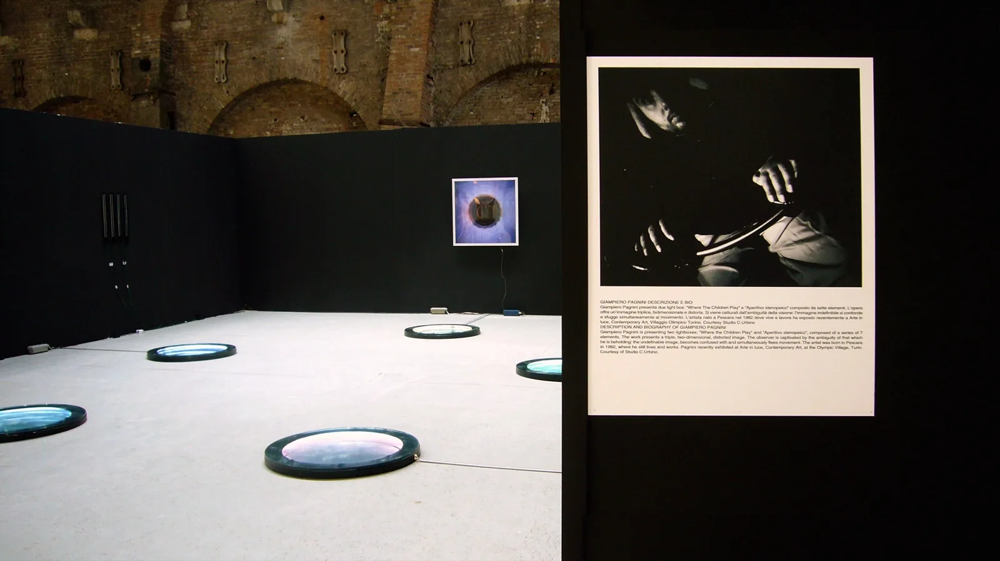
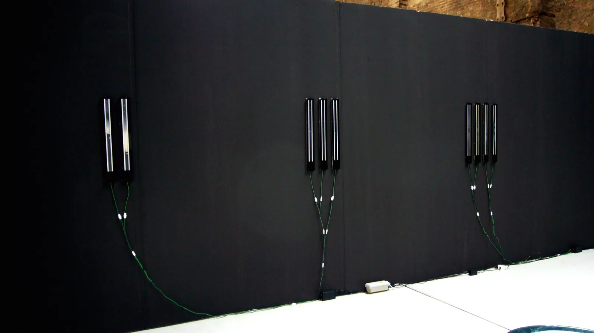
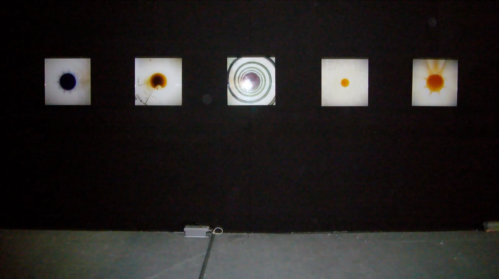
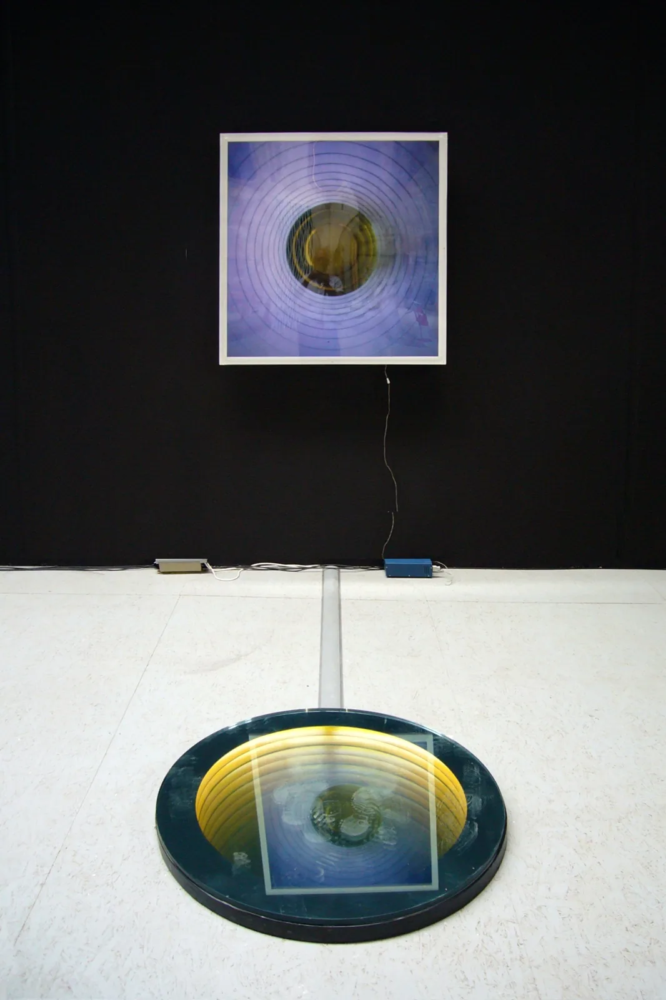
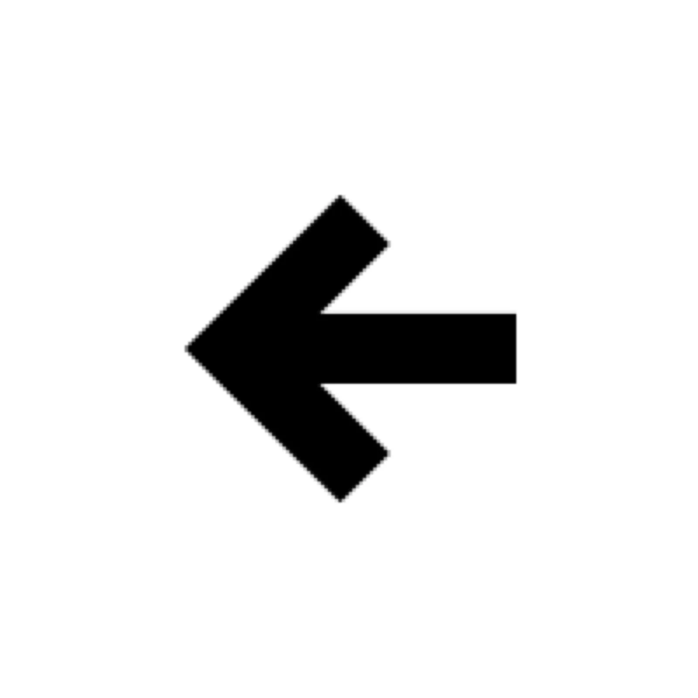
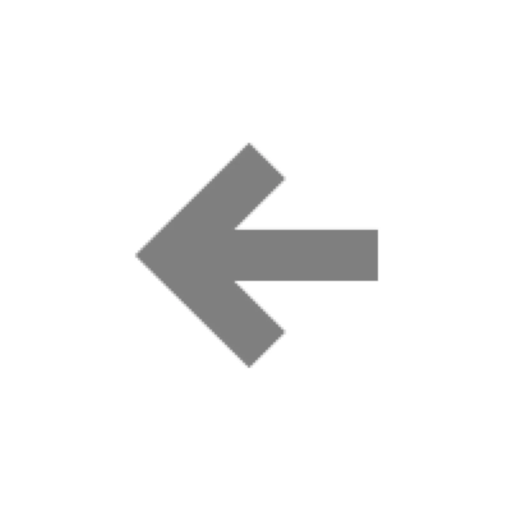

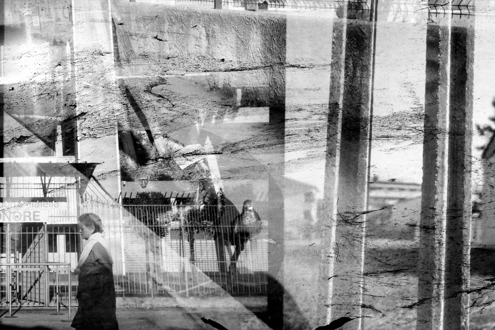
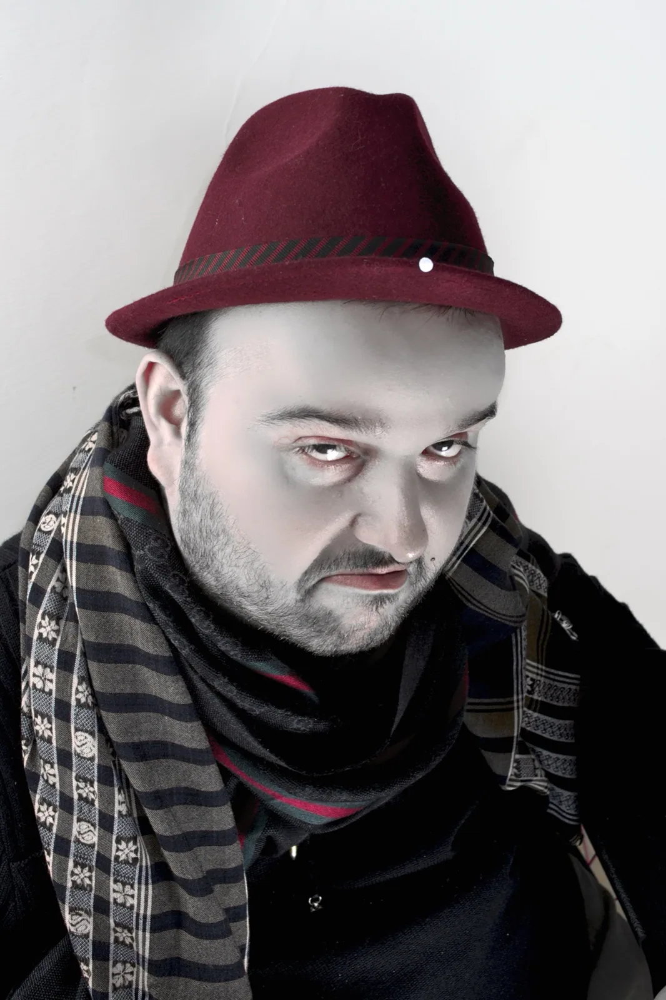